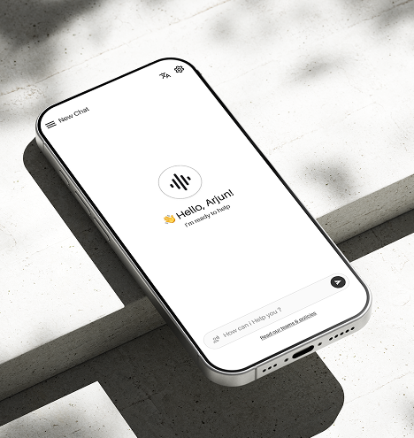

Case study
VoiceTouch

About project
VoiceTouch is a voice-first AI layer that anticipates, automates and acts, so people who are blind or have low vision can do more on their own.
Workflow plan
12 weeks, 6 stagesProblem & solution
Existing tools wait to be asked. VoiceTouch is the first that anticipates.
Problem
Today’s tools only react when asked. Everyday tasks stay slow and tiring for people who are blind or have low vision.
Solution 1
A voice-first AI that anticipates, automates and acts, covering navigation, reading, tasks and safety in one place.
Solution 2
Voice will be the main input from the sign-up screen itself. Three quick voice questions set the app up for each user.
What we learned
Published studies, r/Blind, AppleVis, five tool audits- Reading physical objects: mail, labels, medicine, signsCritical
- Navigation in unfamiliar placesCritical
- Making payments and reading receiptsCritical
- Multi-step tasks that need too many interactionsHigh
- Social media and messaging accessibilityHigh
- Emergency safety, an unmet emotional needUnmet need
“I can do almost anything on my phone. I just want it to stop making me feel like I’m fighting it.”
Priya, 28, blind from birth, software tester
User persona
Families are the hidden userUser flow
From first launch to the safety netTypography & colour
A quiet, minimal paletteThe screens
Thanks for scrolling.
Want to talk about VoiceTouch, or about your next product?